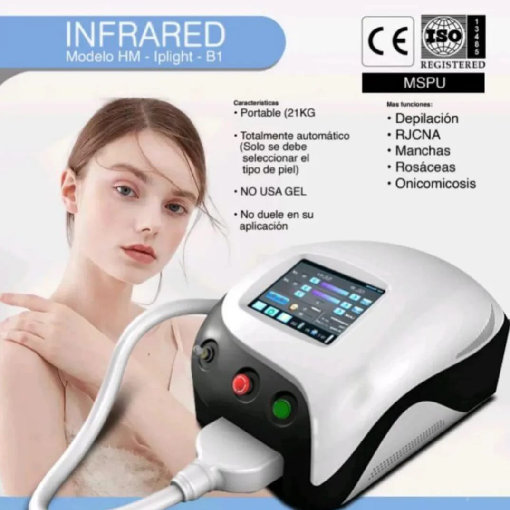
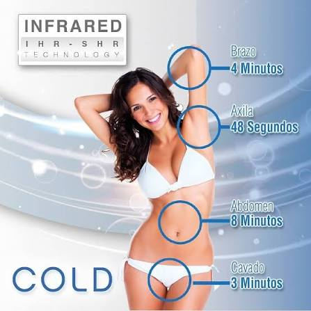
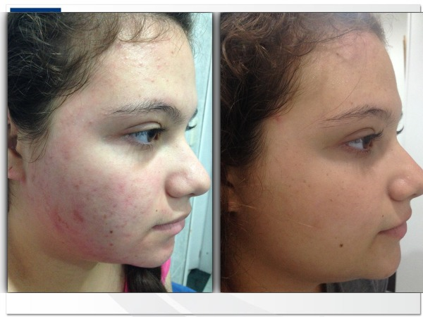
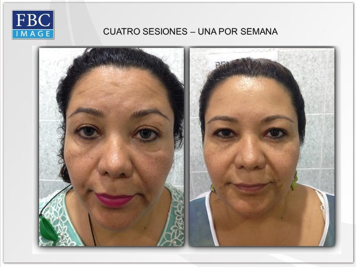
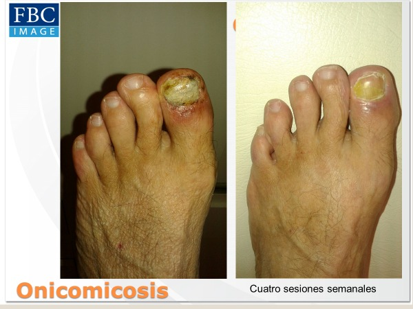
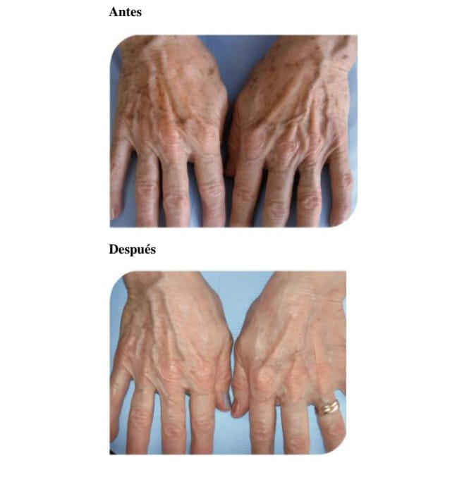

Tecnología avanzada para eliminar el vello de forma progresiva, cuidar la piel y mejorar su textura.
Consultar por WhatsApp

La depilación láser SHR trabaja mediante pulsos de luz suaves y continuos que actúan sobre el folículo piloso, debilitándolo sesión tras sesión.
Además de la depilación, esta tecnología también permite trabajar sobre distintas necesidades estéticas de la piel.
Ayuda a disminuir el enrojecimiento y mejorar el aspecto general de la piel.
Contribuye a reducir inflamación, bacterias y mejorar la textura cutánea.
Favorece un tono más uniforme y ayuda a mejorar manchas superficiales.
Estimula colágeno y elastina, mejorando firmeza y luminosidad.
Tratamiento orientado a mejorar el aspecto de uñas afectadas.




En promedio se recomiendan entre 6 y 8 sesiones, según cada caso.
Es un tratamiento cómodo, con sensación de calor suave.
Se recomienda no tomar sol antes ni después de la sesión e hidratar la piel.